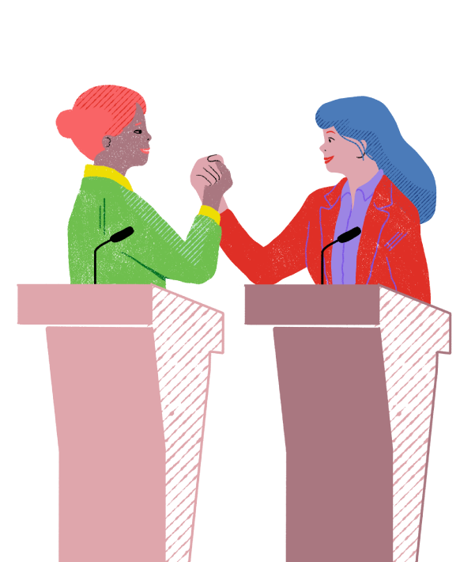

Women have the right to participate fully and exercise their leadership in all spheres of life, including the economic, social, political, technological, and cultural spheres. Greater diversity in decision-making and leadership has also been shown to positively impact productivity, innovation, legitimacy, and responsiveness.
Why women’s leadership?
What parity democracy is?
The concept of democracy parity, promoted by women from different regions, in particular, Latin American women leaders, and collected in the Regulatory Framework to Consolidate Parity Democracy of the Latin American and Caribbean Parliament (2015), aims to install substantive equality and parity as the backbone of democratic governance.
It transcends electoral parity and points to the consolidation of an inclusive State with action for equality and an institutional framework with parity representation in all branches and at all levels of government, including elective positions, appointments, and elected office.
What are the States’ responsibilities?
States have obligations and commitments to women's human rights, assumed in international human rights instruments and the agreements adopted by different world and regional conferences, including the last Summit of the Americas and the 2030 Agenda for Sustainable Development.
Accelerating the efforts to achieve women's full and effective participation in positions of power and decision-making is an urgent issue.
The girls, adolescents, and women of today have the right to a present and future in equality in which they can develop their full potential and fully participate in decision-making.